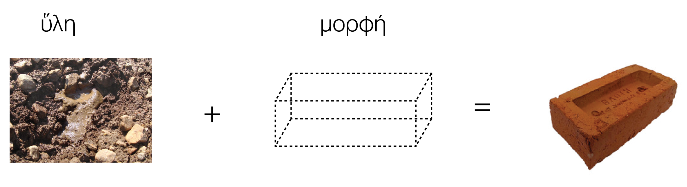

Listening with machines, crafting transductions
technodiversity, creative tools, and critical perspectives in research-creation practices
Dr. José Henrique Padovani
Espaço de Criação e Investigação Sonora [ECrIS]
Escola de Música
Universidade Federal de Minas Gerais [UFMG]
- critical/epistemical: from the concept of transduction to the concept of technodiversity
[passing by some relevant questions concerning art/technology/politics/ecology] - practical: do/think about these practices within our contexts and with sounds tools we use
- dialogical: engaging in a more dialectic discussion on the topics and activities
How do we relate to technology while listening/creating?
- What
assumptions shape/conform our relationships with technical objects and digital tools? - What
epistemological positions andbody/tool/world couplings do we accept and reproduce without major critical considerations? - Conversely, what do
we actively seek to invention and experiment with ?
Three main concepts:
- Transduction
- Technodiversity
- Inscription
[material / symbolic / signal / digital] - (practical part)
transduction
Etymology:
to lead across / to carry over
Usual meaning:
-
1.
energetic propagation in a given material/environment -
2. structuration of a
domain -
3.
information [as a process and a verb, more than a noum] -
4.
individuation/ontogenesis within anmilieu associé
By transduction we mean a physical, biological, mental, or social operationthrough which an activity propagates incrementally within a domain bybasing this propagation on a structuration of the domain operatedfrom one region to another :each structural region serves as a principle and model , as aninitiator for constituting the following region , such that a modification thereby extends progressively throughout this structuring operation. (...)
(...) The simplest image of the transductive operation is provided by the crystal, which, starting from a tiny germ, increases and extends following all the directions in its supersaturated mother liquor: each previously constituted molecular layer serves as the structuring basis for the layer in the process of forming; the result is an amplifying reticular structure. (Simondon 2020, p. 13)

Doctrine or epistemic point-of-view according to which things are ontologically constituted of
Simondon's Critique: Hylomorphism comes from not dirtying one's hands.
-
Mold/"Form": Made of wood or other resistant material, allowing detachment (using sand), is materially conceived to be reusable. -
Clay/"Matter": Must be colloidal, homogeneous, have specific consistency and "microformal" properties to avoid cracking, for instance.
Thinking about technology is deeply related to the experience of
When one recedes into the past... it is only the products of techniques and art that allow us to go further back in time... Art itself disappears quite quickly, and beyond 50,000 years,only techniques allow us to trace the human stream back to its origins ... (Leroi-Gourhan 1984, p. 11)
The technical operation thatimposes a form on a passive and un-determined matter isn’t just an operation considered abstractly by thespectator who sees what enters the workshop andwhat leaves it without knowing the elaboration properly speaking . This is essentially the operationcontrolled by the free man and executed by the slave ; the free man chooses the matter—which is undetermined because it suffices to designate it generically by the name substance—without seeing it, without manipulating it, and without preparing it: the object will be made of wood or iron or clay.The veritable passivity of the matter is its abstractavailability behind the given order that other men will execute . The passivity is thepassivity of the human mediation that will procure the matter . Theform corresponds to what the man who commands has thought by himself and what he must express positively when he gives his orders: theform is therefore of the order of the expressible; it is prominently active because it is what is imposed on those who manipulate the matter;it is the very content of the order, that through which he governs . (...)
The distinction between matter and form, between the soul and the body, reflects a city that contains citizens in opposition to slaves. (Simondon 2020)
Extension and Mediation
Regarding technology, and the tools and instruments that extend, protect, and/or transform our senses, bodies, and actions in/of the world, the transductive chain—which goes from the world around me, passes through objects and technical elements, reaches my body and my cognitive system—leads us to the question and provocation posed, in different ways, by Gregory Bateson and Bruno Latour.
Bateson (1987):
But what about “me”? Suppose I am a blind man, and I use a stick. I go tap, tap, tap.Where do I start? Is my mental system boundedat the handle of the stick ? Is it boundedby my skin ? Does it starthalfway up the stick ? Does it startat the tip of the stick ? But these are nonsense questions.The stick is a pathway along which transforms of difference are being transmitted . (Bateson, 1987)
Latour (1994), on the other hand, suggests that artifacts are more than just things:
...if our challenge is to be met, it will not be met by considering artifacts as things. They deserve better. They deserve to be housed in our intellectual culture as full-fledged social actors.They mediate our actions? No, they are us. (Latour, 1994)
technodiversity
To build a positive relationship with technology is, also, to develop or own ways to
As Simondon points out, even the
Although the worker’s relationship with the machine is impoverished by a system prioritizing disciplined repetition over creative engagement, they still grapple with its particularities daily, understanding its failures and potentials.
We could hypothesize that this profound alienation anticipates the
Bernard Stiegler highlights this issue when he discusses the concept of proletarization of consumers:
But capitalism, after optimizing production—that is, the conditions of subsistence—through the mechanization of production, ends upproletarianizing not only the producer, but also the consumer , who has nothing left to sell but their soul, that is, their conscious time: it is a matter of subjecting all existence to the imperatives of subsistence… (Stiegler 2013)
Such symbolic, anthropological, and techno-cultural impoverishment is associated, by Yuk Hui, with the hegemony of a universalist and positivist view of technology, which he terms
...what Vandana Shiva called the “monoculture of the mind” is omnipresent in the capitalist logic of globalization; we, therefore, end up havingmonotechnology , which recklessly views itself as the only option. The“monoculture of the mind”, which endangers both biodiversity and noodiversity , suggests that the key to resolving this problem is to return to the discourse oftechnodiversity . Therefore,the matrix of biodiversity, noodiversity, and technodiversity form a more comprehensive framework than the dialectics between nature and technology for understanding the planetary condition. (...) ...without differentiation and diversification, it is impossible to talk about difference and diversity.Diversity is not only to be maintained, but it also has to be constantly created. (Hui 2024, p. 225-226)
In parallel with the notion of biodiversity, which emphasizes the importance of biological and ecological diversity for the resilience and sustainability of ecosystems, and the notion of noodiversity, which highlights cultural, epistemological, and cognitive diversity as essential for the richness of human societies,
This
If, as Stiegler argues based on Leroi-Gourhan’s ideas, technology allows for the externalization of memory and knowledge, in a moment of increasing symbolic and cognitive proletarianization, fostering
Fundamentally in the field of arts, whose artisan origin is deeply linked to technique and technical making, it seems strategic to foster practices that promote technodiversity. Especially in the current context, where the creative and speculative potential of machine listening/learning techniques is impoverished by uncritical anthropomorphization and a trivialization of what such metaphors can represent, it is crucial to recover what is rightfully ours, not only in terms of “copyright” or artisanal métier, but, above all,
5 Inscription and Sonic Writing
To bridge our theoretical framework with the practical activities of this workshop, we must define the scope of inscription.
Following Thor Magnusson's analysis in Sonic Writing (2019), we should not view musical writing merely as symbolic notation on paper. Instead, we must consider a
Magnusson categorizes these inscriptions into distinct modes, all of which are relevant to our use of creative tools:
- 1.
Material Inscriptions - 2.
Symbolic Inscriptions - 3.
Signal Inscriptions - 4.
Digital Writing [Computational Inscriptions]
1. Material Inscriptions
How musical theory and logic are
The instrument itself is a “frozen” theory of music.
2. Symbolic Inscriptions
The domain of notation, code, and language.
This involves the
3. Signal Inscriptions
The domain of the continuous waveform, emerging with the phonograph and evolving into digital signal processing.
Here, we write traces that resemble the behaviour of
4. Digital Inscriptions [Computational Inscriptions]
The convergence space where the previous modes collide and hybridize. Here, the distinction between the instrument (material), the score (symbolic), and the sound (signal) becomes fluid.
Through code and algorithms, we engage in a second-order writing: writing the rules and systems that generate the sound, rather than the sound itself.
This is the domain where Machine Listening and Learning operate, introducing a layer of agency where the inscription itself can “adapt”, “learn”, and “respond”, creating new modes of
In the context of Machine Listening and Machine Learning, these categories converge and collapse.
When we employ an algorithm to “listen” to an audio input (signal) and generate a response or process/synthesize things being informed by the incoming sounds/signals, we are engaging in a process of
This is far more interesting than the misleading anthropomorphic metaphor of learning or listening attributed to the machines or technical objects.
What we are actually doing is building transductions between different inscription modes: from signal to symbol, from material to digital, from continuous to discrete.
These processes are, in different ways, at the core of instrument building, the invention of apparatuses, and compositional techniques, for centuries.
The invention of notation solutions, of instruments and automata, of tape music techniques, of live electronics, of granular synthesis, of algorithmic composition, of digital audio workstations, of machine learning models for sound generation—all these are
The practical component of this workshop will explore the machine and technical objects not as objective tools or as anthropomorphic (and somewhat narcissistic) mirrors, but as a
That, hopefully, will allow us to develop our own means of listening, seeing, transcribing, understanding and